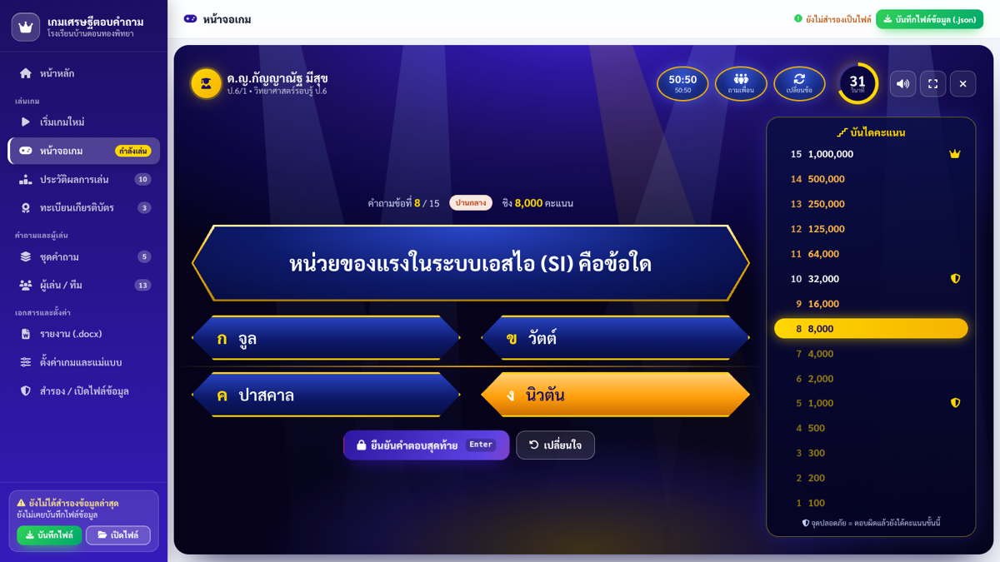
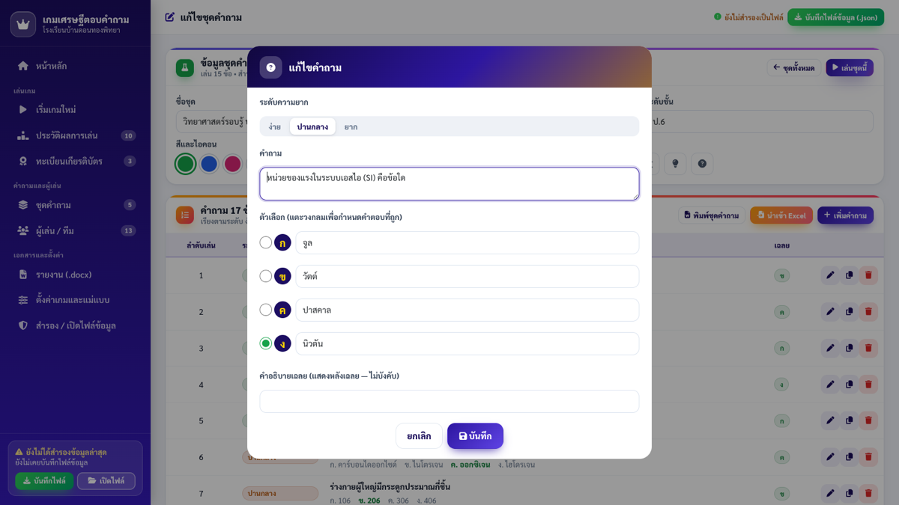
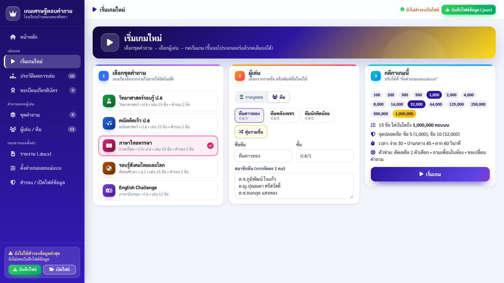
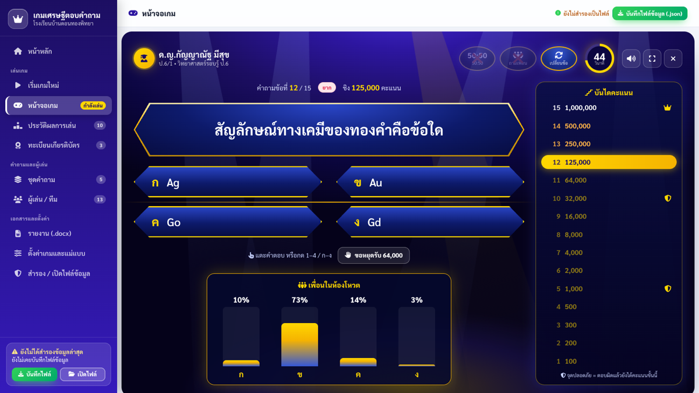
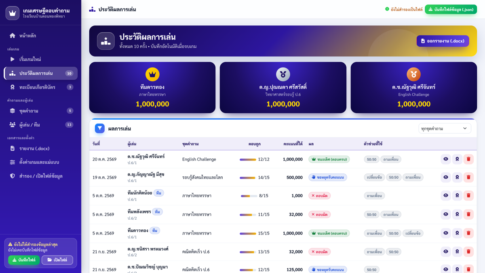

เกมเศรษฐีตอบคำถามหน้าชั้นเรียน
เกมโชว์บันไดคะแนน • ตัวช่วย 3 อย่าง • จุดปลอดภัย • ใช้งานออฟไลน์
เวอร์ชัน 1.0 — System ห้องสื่อครูคอม

เมนู ตั้งค่าเกมและแม่แบบ: กรอกชื่อโรงเรียน ผู้อำนวยการ ครูผู้จัดกิจกรรม ชั้น ภาคเรียน ปีการศึกษา (ตั้งครั้งเดียว ใช้ทุกเอกสาร) • บันไดคะแนน 10–15 ขั้น แก้ค่าแต่ละขั้นและติ๊กจุดปลอดภัยได้ • เวลาต่อข้อตามระดับ • เปิด/ปิดตัวช่วยและเสียง • แก้ถ้อยคำทุกข้อความในบันทึกข้อความและเกียรติบัตร
เมนู ชุดคำถาม → สร้างชุดใหม่ → เพิ่มคำถาม: เลือกระดับ (ง่าย/ปานกลาง/ยาก) พิมพ์คำถาม 4 ตัวเลือก แตะวงกลมหน้าคำตอบที่ถูก เกมจะเรียงข้อจากง่ายไปยากให้เอง ข้อที่เกินจำนวนขั้นบันไดเป็น ข้อสำรอง สำหรับตัวช่วย "ขอเปลี่ยนคำถาม" (แนะนำ 15 + 2 ข้อ)

กด "แม่แบบ Excel" กรอก 1 แถวต่อ 1 ข้อ: ระดับ | คำถาม | ตัวเลือก ก–ง | เฉลย (ก/ข/ค/ง) | คำอธิบาย แล้วกด "นำเข้าจาก Excel" ระบบแจ้งแถวที่ผิดรูปแบบให้แก้

| ตัวช่วย | การทำงาน |
|---|---|
| 50:50 | ตัดตัวเลือกผิดออก 2 ข้อ |
| ถามเพื่อนในห้อง | ให้เพื่อนยกมือ ครูกด + กรอกจำนวน แล้วแสดงกราฟโหวต (หรือกด "จำลองผลโหวต") เวลาหยุดระหว่างนับ |
| ขอเปลี่ยนคำถาม | เปลี่ยนเป็นข้อสำรองระดับใกล้เคียง (ต้องมีข้อสำรองในชุด) |

รีเฟรชหน้าหรือปิดเบราว์เซอร์กลางเกม เปิดใหม่แล้วกด "เล่นต่อ" ได้จากหน้าหลัก
จบเกมแล้วผลบันทึกอัตโนมัติในเมนู ประวัติผลการเล่น (ดูรายละเอียดรายข้อได้) • กดรูปเหรียญหรือปุ่ม "ออกเกียรติบัตร" ระบบลงทะเบียนเลขที่อัตโนมัติ (รันแยกตามปีการศึกษา) ในเมนู ทะเบียนเกียรติบัตร เลือกหลายใบแล้ว "พิมพ์เป็นชุด" (ตั้งกระดาษ A4 แนวนอน)

เมนู รายงาน (.docx): สรุปผลการจัดกิจกรรม • บันทึกข้อความรายงานผลเสนอผู้อำนวยการ (ใส่เลขที่/วันที่ได้) • ชุดคำถามพร้อมเฉลย/ไม่มีเฉลย — เป็นไฟล์ Word ฟอนต์ TH SarabunPSK 16 ตามระเบียบงานสารบรรณ แก้ต่อใน Word ได้
ไม่มีเสียง? แตะหน้าจอ 1 ครั้งก่อน (เบราว์เซอร์อนุญาตเสียงหลังผู้ใช้แตะ) ตรวจปุ่มลำโพงบนหน้าจอเกมและการตั้งค่า
ชุดคำถามกดเล่นไม่ได้? ต้องมีอย่างน้อย 5 ข้อ และกรอกคำถาม/ตัวเลือกครบทุกข้อ
ชุดมี 12 ข้อแต่บันได 15 ขั้น? เกมใช้ขั้นบนสุด 12 ขั้น (รางวัลสูงสุดเท่าเดิม)
ข้อมูลหาย? เมนู สำรอง/เปิดไฟล์ข้อมูล → เปิดไฟล์ .json ที่บันทึกไว้ หรือ "กู้คืนข้อมูลชุดก่อนหน้า"
ใช้บนมือถือ/แท็บเล็ตได้ไหม? ได้ทุกหน้า แต่การฉายขึ้นจอใหญ่บนคอมจะสวยและสะดวกที่สุด